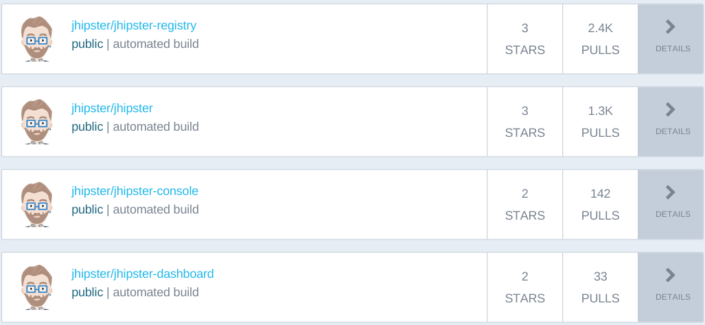
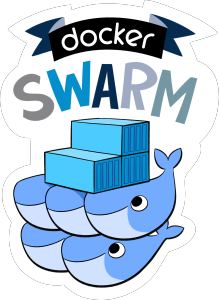

Paris JHipster Meetup #3
Pascal GRIMAUD
Java EE Consultant
Docker enthusiast
Contact:


JHipster & Docker
How Docker is used ?
- JHipster installation with Docker
- Services generator
- JHipster Organization at Docker Hub
- Microservices
Docker Engine

Installations
- Local installation
- Vagrant box: devbox
- Docker installation
Docker installation
Based on ubuntu:trusty
- Image: jhipster/jhipster
- generator-jhipster: Dockerfile
- git
- java 8
- node 4 + npm
- yeoman, bower, gulp
- wget, curl, vim, etc.
How to install
docker pull jhipster/jhipsterput archi here...
Demo (1/3)
Create a JHipster project with Cassandra as database{
"generator-jhipster": {
"jhipsterVersion": "3.0.0",
"baseName": "jhipster",
"packageName": "com.mycompany.myapp",
"packageFolder": "com/mycompany/myapp",
"serverPort": "8080",
"authenticationType": "session",
"hibernateCache": "no",
"clusteredHttpSession": "no",
"websocket": "no",
"databaseType": "cassandra",
"devDatabaseType": "cassandra",
"prodDatabaseType": "cassandra",
"searchEngine": "no",
"buildTool": "maven",
"enableSocialSignIn": false,
"rememberMeKey": "722f133a8480120ddc4436f084776036db6958b2",
"useSass": false,
"applicationType": "monolith",
"testFrameworks": [
"gatling"
],
"enableTranslation": true,
"nativeLanguage": "en",
"languages": [
"en"
]
}
}Docker Compose
After generating a JHipster project
- Folder src/main/docker
- app.yml
- Dockerfile
- elasticsearch.yml
- mysql.yml
- sonar.yml
Thanks to Travis CI

Docker Hub

JHipster Organization
https://hub.docker.com/r/jhipster/ Next...

Demo with
{
"relationships": [],
"fields": [
{
"fieldName": "meetup",
"fieldType": "String"
},
{
"fieldName": "description",
"fieldType": "String"
}
],
"changelogDate": "20160328225805",
"dto": "no",
"service": "no",
"entityTableName": "meetup"
}mvn -PprodThank you
Reveal.js - The HTML Presentation Framework